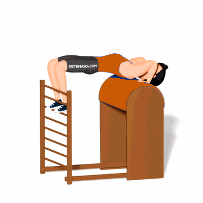

Bridge

O exercício trabalha o equilíbrio e fortalecimento dos membros superiores. Porém também auxilia na mobilização da coluna em extensão.
Ficha Técnica
Tipo: Pilates
Grupo Muscular: Costas
Aparelho: Nenhum
Músculos: Nenhum
Como realizar
- Posicionado com muito cuidado dentro do barrel, apoiando as escápulas no barrel, os pés no espaldar e as mãos como suporte ao lado dos ombros;
- Com as mãos, tente empurrar o barril para baixo e concomitantemente faça a extensão do quadril e da coluna vertebral;
- Retorne a posição inicial com cuidado.
 RC STORE
RC STORE